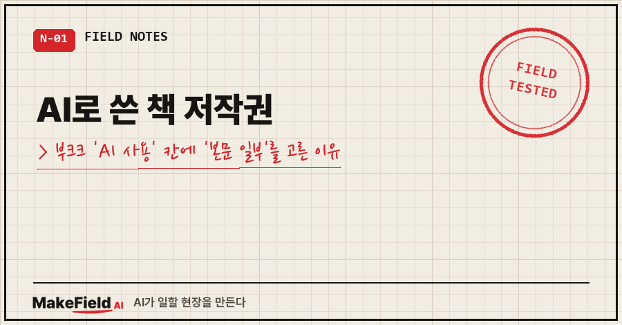
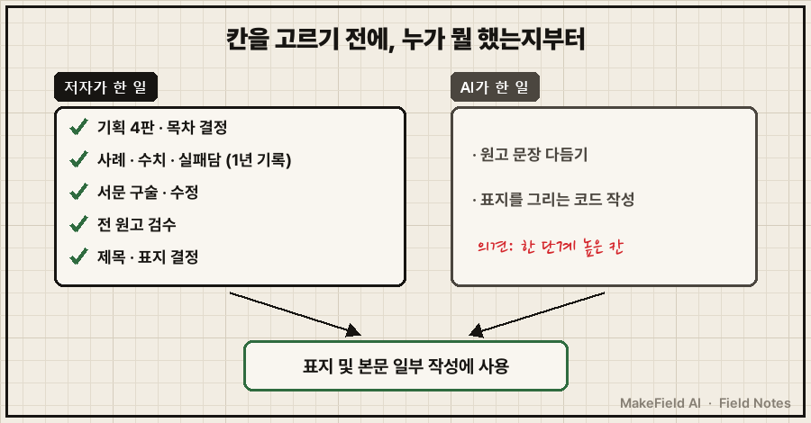
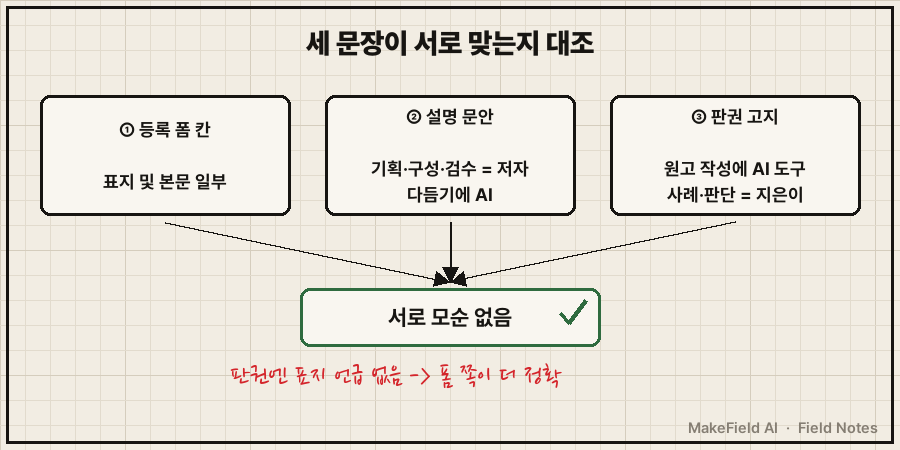
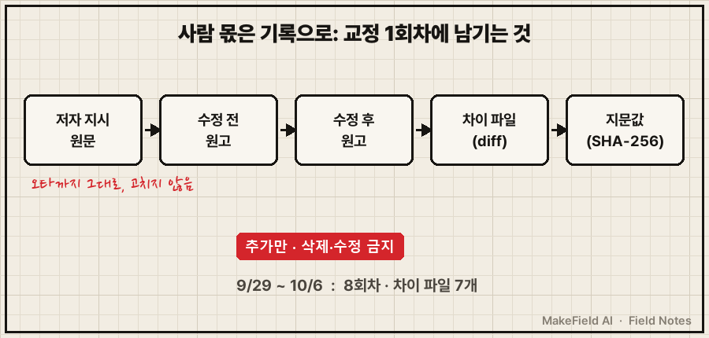

AI로 쓴 책을 자가출판 플랫폼에 올리면 'AI 사용 여부와 기여 정도'를 직접 고르는 칸이 나와요.
여기서 기준은 "어느 칸이 유리하냐"가 아니라 "내가 실제로 한 일과 맞느냐"입니다. 그리고 그 사실은 말로가 아니라 남겨 둔 기록으로 증명해야 하고요.
기준이 되는 사실부터 적어 둘게요. 문화체육관광부와 한국저작권위원회는 2023년 12월 「생성형 AI 저작권 안내서」를 냈고, 2026년 4월 저작권위원회 위원장 인터뷰에서도 "AI만으로 생성된 결과물은 저작물이 아니라 산출물로 보지만, 인간의 창작적 기여가 들어가면 기여 부분에 대해선 저작권이 인정된다"고 설명했어요. 결국 AI로 쓴 책 저작권은 사람이 한 몫을 얼마나 보여줄 수 있느냐에 달린 셈이죠.
저는 공장 설비 제어 쪽에서 15년을 일한 엔지니어예요. 지난 1년 동안 퇴근 후에 AI한테 말로 시켜 가며 업무 기록을 쌓았고, 그걸 묶어서 2026년 10월 첫 책을 냈습니다.
이 글은 등록 마지막 단계에서 그 칸 하나를 두고 고민한 기록이에요. (법률 자문이 아니라 제가 겪은 사례입니다.)
1. 등록 폼에서 멈춘 문장 하나
원고와 표지를 다 올리고 나니 이런 안내가 붙은 칸이 나오더라고요.
AI로 기여가 상당수 이루어진 경우
외부유통사의 유통신청이 보류되거나 거절될 수 있습니다.순간 머리가 복잡해졌어요.
많이 썼다고 적으면 외부 서점 유통이 막힐 수 있고,
적게 적으면 허위 기재가 되고..
AI한테 같이 판단해 달라고 했더니, 의견은 한 단계 높은 기여 칸이었어요. 원고를 다듬는 데 AI를 꽤 많이 썼으니 넉넉하게 적자는 쪽이었죠.
2. 칸을 고르기 전에 '누가 뭘 했는지'부터 갈랐어요
저는 그 의견을 바로 따르지 않았습니다. "처음부터 끝까지 AI가 쓴 건 아니다"라는 게 제 판단이었거든요. 그래서 감으로 고르지 않고 작업을 사람 몫과 AI 몫으로 나눠 봤어요.

| 구분 | 누가 했나 | 근거로 남은 것 |
|---|---|---|
| 기획·목차·분량 결정 | 저자 | 기획서 판본, 대화 기록 |
| 사례·수치·실패담 | 저자 | 1년치 업무 기록 |
| 서문 | 저자 구술 → 수정 | 수정 전후 원고 |
| 원고 문장 다듬기 | AI | 판본별 원고 |
| 표지 | 결정은 저자, 그리는 코드는 AI | 시안 3안, 10명 설문(8:2) |
이렇게 펼쳐 놓으니 답이 나왔어요. 제가 고른 칸은 '표지 및 본문 일부 작성에 사용'입니다.
AI는 자기 의견을 한 번 말하고, 최종 판단은 저한테 넘겼어요. 이게 맞는 순서라고 생각해요. 칸에 이름이 들어가는 사람이 책임도 지니까요.
3. 칸 하나로 끝이 아니었어요, 세 문장이 서로 맞아야 해요
칸 옆에는 설명을 적는 자리가 있었어요. 저는 주어를 저자로 두고 이렇게 썼습니다.
저자가 1년간 직접 구축·운영한 업무 기록과 실제 사례를 바탕으로
기획·구성하고 검수했으며, 원고를 다듬는 과정에서
생성형 AI를 도구로 활용했습니다.그다음에 한 일이 의외로 중요했어요. 책 맨 뒤 판권 면에 이미 넣어 둔 고지 문장과 대조한 거예요.

판권에는 "원고 작성에 생성형 AI를 도구로 썼으며, 사례와 판단은 지은이의 경험"이라고만 적혀 있었어요. 폼에서는 표지까지 신고했고요. 범위가 조금 달랐지만 서로 어긋나는 말은 아니었습니다. 오히려 표지 코드를 AI가 짰으니 폼 쪽이 더 정확한 거죠.
한 곳은 많이 썼다, 다른 곳은 조금 썼다고 적혀 있으면 그게 나중에 제일 곤란한 모순이 될 거라고 봤어요.
4. 표지는 생성형 이미지 AI를 안 썼어요
표지는 저작권 칸 때문에 따로 확인했어요.
- 그림 생성 AI가 아니라 AI가 짠 코드로 글자와 선을 그렸어요. 바깥에서 가져온 이미지는 뒤표지 QR 하나뿐이고요
- 글꼴은 무료 공개 라이선스(SIL OFL 1.1)인 Pretendard와 나눔손글씨 펜이에요. OFL 공식 FAQ는 작품에 글꼴 이름을 적는 걸 "필수 아님"이라고 해요
- 그래서 저작권 칸에는 '모든 콘텐츠 보유'를 골랐습니다. 남의 사진이나 그림이 0장인 걸 확인한 뒤에요
반대로 아쉬운 결론도 하나 나왔어요. 기성 글꼴에 짧은 문구, 단순한 배치라서 누가 비슷한 표지를 만들어도 저작권으로 막기는 어렵다는 거예요. 이건 AI 때문이 아니라 원래 그런 디자인이라 그냥 받아들였습니다.
5. 사람 몫은 말이 아니라 기록으로 남겨요
사실 이 칸 앞에서 덜 불안했던 건 며칠 전에 해 둔 일 덕분이었어요. 원고 교정을 하던 9월 말 밤에, 제가 AI한테 이렇게 말했거든요.
변경 히스토리 다 저장하고있지? 이게 곧 AI가 다 안만들고
내가 직접 만들엇다라는걸 증명하는거다 알겟지? 네가 잘 보관해줘야해(오타까지 원문 그대로예요. 이 기록은 원래 고치지 않는 게 규칙이라서요.)

그날부터 교정 회차마다 네 가지를 남겼어요.
제 지시 원문,
수정 전 원고,
수정 후 원고,
그리고 둘의 차이 파일과 지문값(해시).
반복 반복..
출간 반려 대응까지 합쳐 8회차, 차이 파일 7개가 쌓였습니다. 위원장 인터뷰 말대로 사람 기여 부분이 보호받는 거라면, AI로 쓴 책 저작권을 두고 제가 내밀 수 있는 자료가 바로 이거예요.
결과도 적어 둘게요. 제출 후 반려를 한 번 받긴 했는데, 사유는 판권 면의 '1판 1쇄' 표기 문제였어요. AI 칸과는 상관없었습니다. 고쳐서 다시 냈고, 2026년 10월 8일 종이책·전자책이 입점했어요. 외부 서점 10곳 유통 신청은 입점과 함께 자동으로 들어갔고, 길게는 4주가 걸린다고 해서 그 결과는 아직 기다리는 중입니다.
자주 받을 질문 두 개
Q. 유통이 걱정되면 AI 기여를 낮게 적는 게 낫지 않나요?
저는 반대로 봤어요. 플랫폼 안내 자체가 기여 정도를 묻는 거라, 사실과 다르게 고르면 나중에 유통 중단이나 계약 문제로 번질 수 있어요. 칸은 사실대로, 대신 사람 몫을 설명 문장과 기록으로 보여주는 쪽이 안전합니다.
Q. AI로 쓴 책 저작권, 등록까지 되나요?
AI가 만든 부분만으로는 안 되고, 사람의 창작적 기여가 있는 부분이 대상이라는 게 정부 안내서와 저작권위원회의 일관된 설명이에요. 구체적인 등록 요건은 한국저작권위원회 누리집의 최신 안내서로 확인하세요.
책값을 쪽수로 계산하다 원고를 반으로 줄인 얘기는 부크크 최소정가 계산법 글에 따로 적어 뒀어요. 칸 하나 고르는 데 이렇게까지 했나 싶지만, 이름이 박히는 자리라 그럴 만했습니다.
AI와 책을 만들며 판단이 갈렸던 장면들은 makefield.ai에서 하나씩 정리하고 있어요.
출처
- 문화체육관광부·한국저작권위원회 「생성형 AI 저작권 안내서」(2023-12-27 발표) — 한국콘텐츠진흥원 트렌드 글 https://www.kocca.kr/trendott/vol04/trend_1.html , 문체부 영문본 배포 보도 https://newsseoul.co.kr/news/view/1065573022263237
- 동아일보 2026-04-21 「"AI로 만든 글·그림·음악, 인간이 기여한 부분은 저작권 인정"」(한국저작권위원회 위원장 인터뷰) https://v.daum.net/v/20260421144511956
- SIL Open Font License FAQ 1.1.2 https://openfontlicense.org/ofl-faq/
- 사례: 2026-09-29~10-08 개인 출간 작업 기록(등록 문안, 표지·저작권 검토 노트, 창작 기여 기록). 책 제목·도서번호 제외
태그: #AI로쓴책저작권 #AI책저작권 #부크크AI사용 #부크크AI표기 #생성형AI저작권 #AI저작권등록 #AI기여표기 #자가출판 #부크크출간 #POD출판 #전자책출간 #책표지저작권 #오픈폰트라이선스 #AI오답노트 #MakeFieldAI